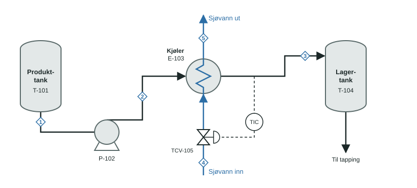

Hva kan du nå?
Dette er siste steg i emnet «Prosessflytskjema». Gå gjennom sjekklisten, les prosessflytskjemaet og strømtabellen, og svar på quizen. Står du fast, går du tilbake til siden det gjelder.
Sjekkliste
- Jeg kan forklare hva et prosessflytskjema viser, og hvordan det skiller seg fra et blokkskjema.
- Jeg vet hva et tagnummer er, og hvor jeg finner det.
- Jeg kan lese en strømtabell og finne mengde, temperatur og trykk for en strøm.
- Jeg kan finne den forenklede reguleringen i et prosessflytskjema og forklare hva den gjør.
- Jeg kjenner igjen symbolene for tank, pumpe, varmeveksler, kompressor, kolonne, ventil og reguleringsventil.
- Jeg vet at jeg skal sjekke symbolforklaringen når jeg møter et symbol jeg ikke kjenner.
- Jeg vet hva et prosessflytskjema ikke viser, og hvor jeg finner det.
Les prosessflytskjemaet
Figuren viser en del av et anlegg der et varmt produkt kjøles ned med sjøvann før det lagres. I dette anlegget betyr T tank, P pumpe og E varmeveksler. Bruk figuren og strømtabellen når du svarer på quizen.

| Strøm | Stoff | Mengde (kg/h) | Temperatur (°C) | Trykk (bar overtrykk) |
|---|---|---|---|---|
| 1 | produkt | 10 000 | 80 | 0,2 |
| 2 | produkt | 10 000 | 80 | 3,0 |
| 3 | produkt | 10 000 | 30 | 2,5 |
| 4 | sjøvann | 50 000 | 8 | 2,0 |
| 5 | sjøvann | 50 000 | 18 | 1,5 |
Quiz
1. Hva er tagnummeret til kjøleren?
- P-102
- E-103
- TCV-105
Kjøleren er en varmeveksler, og i dette anlegget har den tagnummeret E-103. P-102 er pumpa, og TCV-105 er reguleringsventilen.
2. Hvor varmt er produktet når det kommer til lagertanken?
- 80 °C
- 30 °C
- 18 °C
Produktet går til lagertanken i strøm 3. Strømtabellen viser 30 °C. 18 °C er sjøvannet som går ut av kjøleren.
3. Hvorfor er trykket høyere i strøm 2 enn i strøm 1?
- Fordi pumpa øker trykket
- Fordi produktet blir kaldere
- Fordi sjøvannet presser på produktet
Strøm 1 går inn i pumpa, og strøm 2 kommer ut av den. Pumpa øker trykket fra 0,2 til 3,0 bar, slik at produktet kan strømme gjennom kjøleren og opp i lagertanken.
4. Hvilken strøm tar opp varmen fra produktet?
- Strøm 1
- Strøm 3
- Sjøvannet, strøm 4 og 5
Sjøvannet kommer inn med 8 °C og går ut med 18 °C. Det har tatt opp varmen som produktet har gitt fra seg.
5. Hva gjør TIC og TCV-105?
- De holder nivået i lagertanken stabilt
- De holder temperaturen på produktet etter kjøleren stabil ved å regulere sjøvannet
- De stopper pumpa hvis det blir for varmt
TIC er en temperaturregulator. Den måler temperaturen på produktet etter kjøleren og åpner eller struper sjøvannsventilen TCV-105.
6. Du skal finne alle stengeventilene rundt pumpa. Hvor ser du?
- I strømtabellen
- I dette prosessflytskjemaet
- I det tekniske flytskjemaet (P&ID)
Prosessflytskjemaet viser bare hovedutstyret og den viktigste reguleringen. Alle ventiler står i P&ID-en.
Kjenner du igjen symbolene?
7. Hvilket symbol viser en kolonne med bunner (brett)?
- En kolonne med et kryss i midten
- En kolonne med streker på tvers
- Et trapes som er bredt i den ene enden
Strekene på tvers er bunnene i en destillasjonskolonne. Krysset viser fyllmasse (pakning), og trapeset er en kompressor.
8. Hvordan ser du at en ventil er en reguleringsventil?
- Den er tegnet med en sirkel rundt
- Den har en stang og en halvsirkel (aktuator) på toppen
- Den er tegnet med stiplede linjer
Aktuatoren er drivverket som beveger ventilen. Den viser at ventilen styres fra en regulator.
Forklar med egne ord
Svar før du åpner forslaget.
1. Sommeren kommer, og sjøvannet blir varmere. Hva gjør temperaturregulatoren?
Varmere sjøvann kjøler dårligere, så produktet blir varmere enn 30 °C etter kjøleren. TIC merker det og åpner TCV-105 mer, slik at det kommer mer sjøvann gjennom kjøleren. Da blir produktet kjølt ned til 30 °C igjen.
2. Hvorfor er mengden den samme i strøm 1, 2 og 3?
Det er det samme produktet som går gjennom pumpa og kjøleren. Ingenting blir tilsatt eller tatt ut underveis, så det som går inn, må komme ut (massebalanse). Bare trykket og temperaturen endrer seg.
3. Hva er forskjellen på et blokkskjema, et prosessflytskjema og et teknisk flytskjema (P&ID)?
Blokkskjemaet viser bare trinnene og strømmene mellom dem. Prosessflytskjemaet viser hovedutstyret med tagnummer, de viktigste strømmene med driftsdata og den viktigste reguleringen. P&ID-en viser alt utstyr, alle rør, ventiler og instrumenter.
Les mer
Om kildene: Teksten, spørsmålene og figurene på denne siden er laget for dette nettstedet. Siden bygger på undervisningsopplegg i kjemiprosess- og laboratoriefag ved Sauda vgs, som er utarbeidet med utgangspunkt i blant annet Kjemien stemmer, Laboranten og åpne nettkilder.